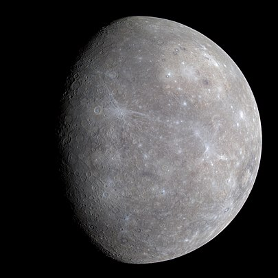

Der Merkur ist mit einem Durchmesser von knapp 4880 Kilometern der kleinste, mit einer durchschnittlichen Sonnenentfernung von etwa 58 Millionen Kilometern der sonnennächste und somit auch schnellste Planet im Sonnensystem. Er hat mit einer maximalen Tagestemperatur von rund +430 °C und einer Nachttemperatur bis −170 °C die größten Oberflächen-Temperaturschwankungen aller Planeten. Aufgrund seiner Größe und seiner chemischen Zusammensetzung zählt er zu den erdähnlichen Planeten. Wegen seiner Sonnennähe ist er von der Erde aus schwer zu beobachten, da er nur einen maximalen Winkelabstand von etwa 28° von der Sonne erreicht. Freiäugig ist er nur maximal eine Stunde lang entweder am Abend- oder am Morgenhimmel zu sehen, teleskopisch hingegen auch tagsüber. Details auf seiner Oberfläche sind ab einer Fernrohröffnung von etwa 20 cm zu erkennen. In 46 % der Zeit ist Merkur der am nächsten bei der Erde befindliche Planet.
 12
3 4 5 6 7 8 9